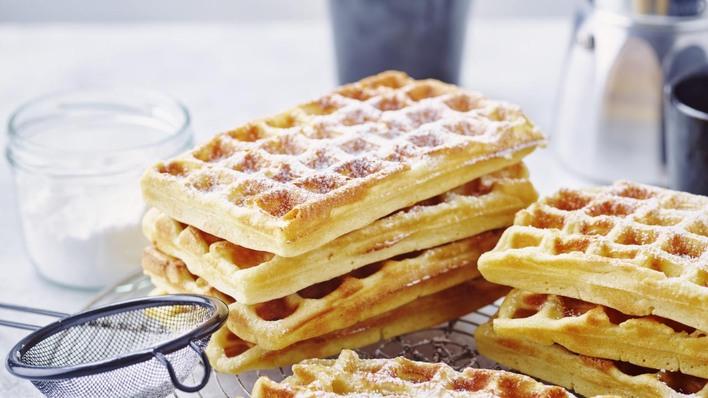

wafel recept🧇
bron: libelle-lekker
Beschrijving📄
Versgebakken wafels zijn het soort eenvoudige luxe dat zelfs een gewone dag bijzonder kan maken. Zodra ze van het wafelijzer komen, verspreiden ze die warme, zoete geur die meteen een gevoel van gezelligheid oproept. Hun goudbruine, krokante buitenkant contrasteert prachtig met de zachte, luchtige binnenkant, waardoor elke hap een perfecte balans biedt tussen textuur en smaak. Je kunt ze subtiel bestrooien met een wolkje poedersuiker, of juist royaal aankleden met vers fruit, romige slagroom, warme chocoladesaus of een vleugje honing. Hoe je ze ook serveert, wafels hebben het magische vermogen om mensen samen te brengen—rond de ontbijttafel, bij een brunch of gewoon als verwenmoment tussendoor. Elke wafel draagt die onweerstaanbare geur en smaak van pure verwennerij. Het is een kleine traktatie die je even doet stilstaan, genieten en beseffen dat geluk soms heel simpel kan zijn.

Ingrediënten
voor 24 wafels
- eiren 4
- water(bruisend)
- olie(voor wafelijzer)
- zelfrijzende bloem 375 g
- vanillesuiker 4 zakjes
- melk 4 dl
- boter 225 g
- aardappelzetmeel 2 el
- suiker 4 el
- poedersuiker
Instructies
- Werk met ingrediënten op kamertemperatuur. Meng de eieren met de suiker en de vanillesuiker tot een luchtige massa.
- Zeef de zelfrijzende bloem en het aardappelzetmeel boven de deegkom en meng door het beslag. Voeg er de zachte boter bij en roer glad.
- Meng de melk met het bruisend water en roer tot een vloeiend beslag. Laat het beslag 1 u rusten.
- Verhit een wafelijzer tot stand 3 à 3,5. Breng wat olie met een borsteltje aan op het wafelijzer. Vul met het beslag en bak de wafels goudbruin.
- Laat de wafels volledig afkoelen op een rooster. Serveer met poedersuiker.